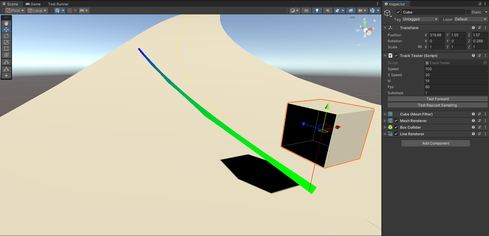
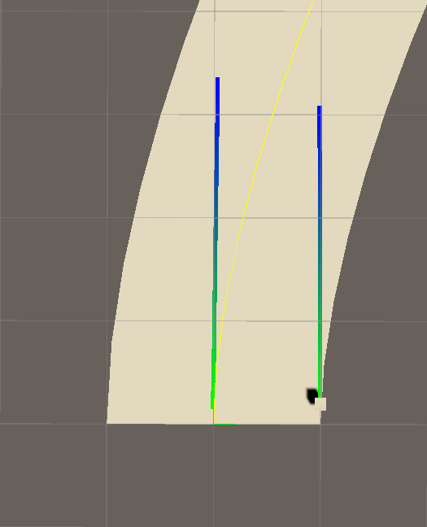
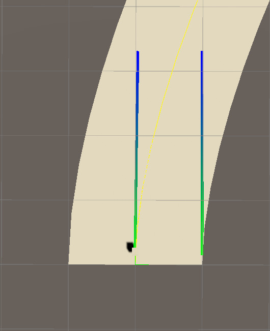

Devlog 003 – AI Movement Prototype
In this short video, simple AI agents are racing along the track, using the center line for guidance. The movement is updated in local coordinate space \((l,w)\) rather than in world space. There is no collision logic yet, and if vehicles were to leave the track, they would simply become stuck. To prevent the latter, they can strafe and will do so when they notice that the lateral parameter \(w\), measuring the distance to the center line, is becoming too large.
How do AI agents move
With the track segment prototype setup the last time, it is very easy to make an AI vehicle follow the center line perfectly. In every Update cycle, it could simply advance the parameter \(l\) by Time.deltaTime * speed and request a new world space position from ITrackSegment.WorldPosition(float l, float w) with \(w=0\). However, this would constrain all vehicles to the center line, which is not desirable. Instead, the AI shall use the center line and the local reference frame defined by
f = segment.Forward(l, w);
r = segment.Right(l, w);
u = segment.Up(l, w);
for orientation and movement. At this point, with the only track segment available being based on a cubic Hermite spline, the local reference frame provides essentially enough information when paired with the track space coordinates \((l,w)\). Every time the AI is updated, it is first rotated such that its transform.up and transform.forward align with the local up and forward via transform.rotation = Quaternion.LookRotation(f, u);. This means that the AI does not actively steer in the usual sense. Rather, it follows the evolution of the track’s local reference frame. While this is sufficient for now, it will need to be revised once additional effects such as collisions or more complex track geometries are introduced.
The velocity of the vehicle is composed of two parts: a forward component along \(\mathbf{f}\) and a lateral component along \(\mathbf{r}\). The latter allows the AI to strafe in order to stay close to the center line when \(|w|\) becomes too large. The two velocities are added together (without renormalization) to form the velocity \(\mathbf{v}\) and projected onto the local reference frame.
This gives a direction and a distance the vehicle should move in the local reference frame.
These components are then used to advance the parameters:
After this step, the new world space position is reconstructed using the track representation.
However, this approach introduces a subtle problem. The projection is performed using the local reference frame at the beginning of the step, while the new position is reconstructed using the reference frame at the updated parameters. Since the track is curved, these frames are not identical. As a result, even if the intended movement is straight in world space, the reconstructed motion can exhibit small deviations and accumulate length errors.
To reduce these artifacts, the update is performed in several substeps per frame. Additionally, an arc length correction is applied: the the actual distance along the track between the start and end point of the step is approximated and compared to the desired movement distance. A correction factor is then used to rescale the step so that the effective movement length matches the intended one.
The resulting update scheme for a single substep is implemented as follows:
public (float l1, float w1, bool onTrack) UpdatePosition((float, float) pos0, (float, float) dir, float dist)
{
(float l0, float w0) = pos0;
(float ml, float mw) = dir;
float l1 = l0 + dist * ml;
float w1 = w0 + dist * mw;
float arc = ApproxCurveLength((l0, w0), (l1, w1), 1);
float corr = dist / arc;
corr = float.IsNaN(corr)||float.IsInfinity(corr) ? 1f : corr;
l1 = l0 + (l1 - l0) * corr;
w1 = w0 + (w1 - w0) * corr;
return (l1, w1, Mathf.Abs(w1) < 0.5f * Width(l1) && l1 <= length && l1 >= 0f);
}
and returns a new track coordinate pair \((l,w)\) and a boolean onTrack that tells the AI agent if it has left the track segment.
The Track Tester
So what is the effect of this correction factor? This question can be answered using a small test probe for the editor that behaves similar to an AI agent. In fact, both inherit from the VehicleBehaviour and use the same update logic for the track coordinates \((l,w)\).

The TrackTester first performs a raycast to find a track segment and then locates itself on this segment. Then, it computes waypoints along the path a vehicle would follow if it kept moving forward along its forward direction would pass by. It does so based on an assumed frame rate, number of substeps and vehicle speed.
onTrack = FindTrackSegment(out TrackSegment segment, out RaycastHit hit);
if (onTrack)
{
(float l0, float w0) = segment.GetTrackWSCoordinates(hit);
Debug.Log($"TrackTester [{gameObject.name}] Raycast: relative local track coordinates are ({l0 / segment.length},{2f * w0 / segment.Width(l0)})");
Debug.DrawRay(transform.position, -transform.up * hit.distance, Color.red, 2f);
// local reference frame
Vector3 f = segment.Forward(l0, w0);
Vector3 r = segment.Right(l0, w0);
Vector3 u = segment.Up(l0, w0);
// position in 3D world space
Vector3 wp = segment.WorldPosition(l0, w0);
// line renderer
fwdLR.SetPosition(0, wp + 0.15f*u);
// keep forward, try to align up with the local up
transform.rotation = Quaternion.LookRotation(transform.forward, u);
// projection of the forward direction
float vl = Vector3.Dot(f, transform.forward);
float vw = Vector3.Dot(r, transform.forward);
// main loop
float dt = 1f / (float)fps;
float dti = dt / (float)substeps;
float l1 = l0;
float w1 = w0;
for (int i=0; i<N; i++)
{
for (int j=0; j<substeps; j++)
{
// advance l,w
(l1, w1, onTrack) = segment.UpdatePosition((l0, w0), (vl , vw), speed * dti);
// local reference frame
f = segment.Forward(l1, w1);
r = segment.Right(l1, w1);
u = segment.Up(l1, w1);
// sample world space ...
wp = segment.WorldPosition(l1, w1);
// ... and indicate the movement with the line renderer
fwdLR.SetPosition(i+1, wp + 0.15f * u);
// forward projection
vl = Vector3.Dot(f, transform.forward);
vw = Vector3.Dot(r, transform.forward);
// new start values
l0 = l1;
w0 = w1;
}
}
}
The waypoints are then shown in editor through a LineRenderer component. We can compare how the simulated movement changes when the arc length correction is introduced. Without the correction, the movement on the left of the center line is longer for a plane right curve than a straight movement that starts at the right of the center line. This is because the actual physical length of the left edge is longer than the physical length of the right edge. With the correction, the two simulated movements have approximately the same length.

Before correction

After correction
Room for improvement / alternative approaches
The ability to keep the forward movement consistent is of course especially relevant to the player vehicle. While this seems pretty promising, there are some ideas I want to pursue in the future. For one, the local reference frame is currently recomputed in every substep to get the new forward projections for the next substep. However, they could be used already in the current substep, to get some sort of predictor-corrector scheme. This could be benchmarked to see if this can reduce the amount of substeps needed for a good approximation of forward movement. Currently, the movement converges after 5 substeps, but as it is evident from the figures, it is not completely straight. A predictor-corrector scheme might be helpful here.
The arc length correction is currently performed by computing the magnitude of the difference of world space points along the curve. Even when only the start and end point are used, this gives a good approximation in this setup, but at high speed with high curvature, more sample points can be used. The information on how the arc length changes could be baked into the mesh somehow, however. This information would be comparable to having gradients available. An attempt to introduce a scaling factor for steps in \(l\) based on the vertex distances of the mesh was unsuccessful though. I plan to revisit this train of thought at a later stage, when I implement the player vehicle. For now, what the vehicle logic is lacking the most is collision.